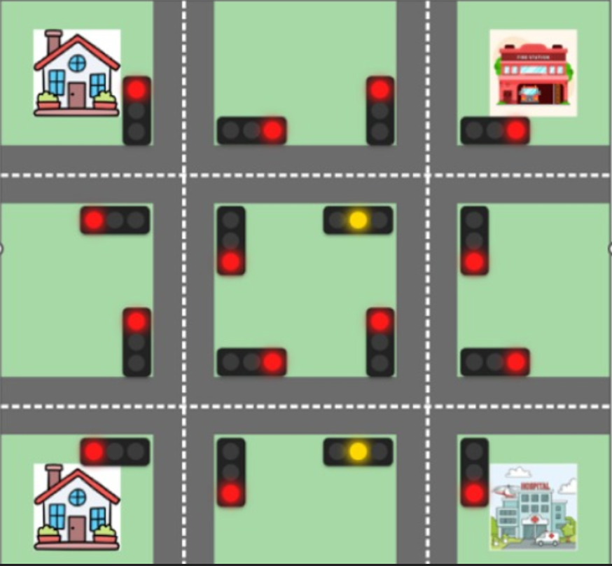

My Projects
Simple Portfolio Website

A personal portfolio website developed as a technical assignment to practice HTML,CSS and javascript.
View ProjectSmart Traffic Control System
A prototype simulation exploring decentralized traffic management. It uses a Multi-Agent AI logic to test how individual signals can adapt to traffic density. W integrated the Gemini API to experiment with basic emergency vehicle detection and priority signaling in a simulated environment.
View ProjectDesktop Assistant

A Python-based virtual assistant capable of performing tasks through voice and text commands. It is being developed as a mini-project to explore intent classification and automation within a desktop environment.
View Project